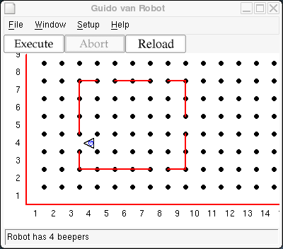
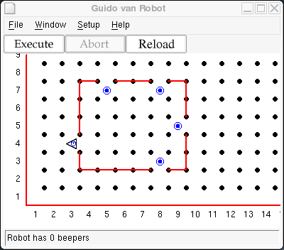

Guido is capable of doing more complex tasks, even when the world he lives in is not well understood. Guido must be able to achieve a goal by testing his environment and, based on those tests, doing some action. The steps Guido would take to solve a problem are called an algorithm.
Before writing a GvR program, the programmer needs to understand the algorithm. Then it can be coded, combined with an appropriate world, and tested. Think of the simple but powerful equation Algorithms + Data Structures = Programs.
In this lesson, the data structure is a world describing Guido's house. Guido is standing by the only door looking out. He sees a storm coming and decides to close all the windows in the house. First he closes the door by depositing a beeper where he stands. Then he will close the windows by depositing a beeper in each window (represented by wall openings). He loves storms, so after closing the windows, he will step outside to watch. Here is the initial world for this scenario.

You need to figure out the algorithm for this and code it, as well as generate the world. Guido hasn't lived in this house very long, so he is not sure exactly where the windows are. You cannot hard code a number of steps to get to a window -- instead, Guido must check for an open window as he walks around the inside perimeter of his house. As for any algorithm, you must also be sure the task will complete. For example, how does Guido know he is back at the door?
The final world in this scenario should look like this:

Copyright © 2003 Roger Frank.